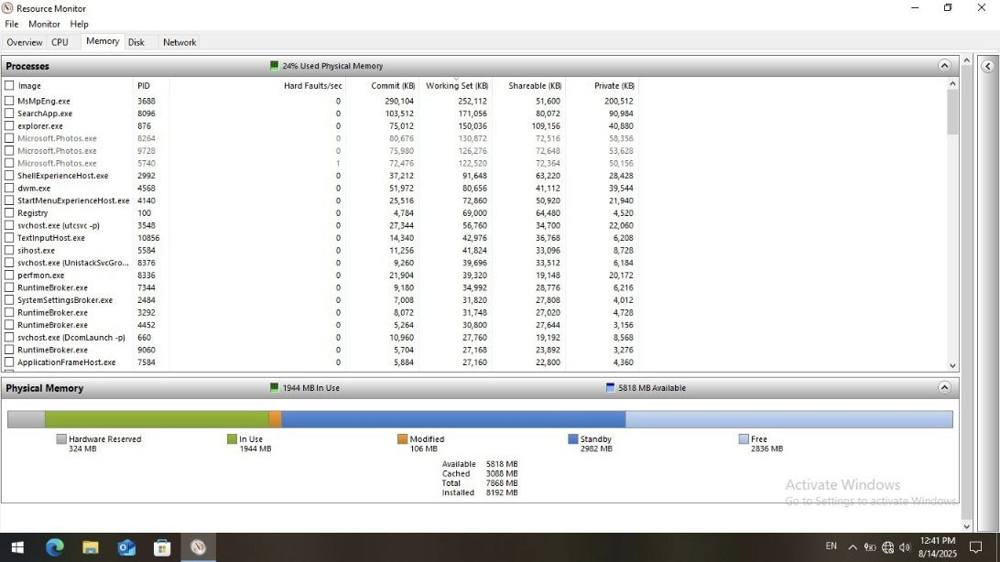
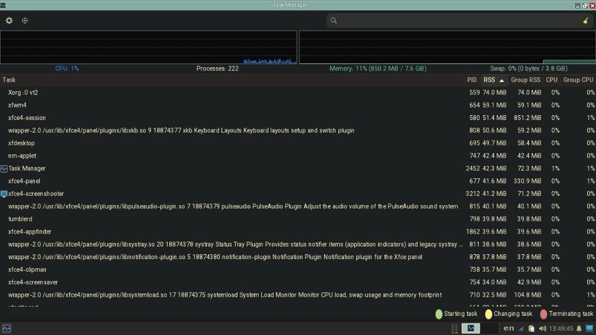
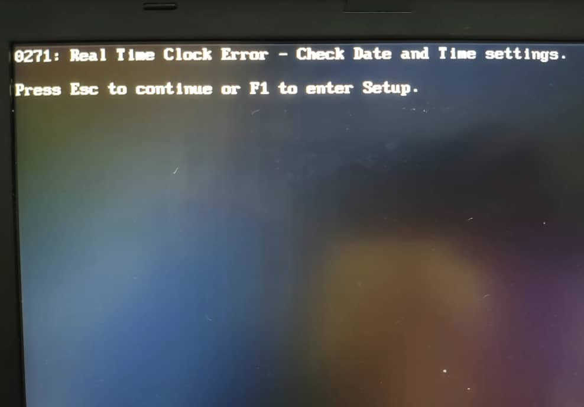
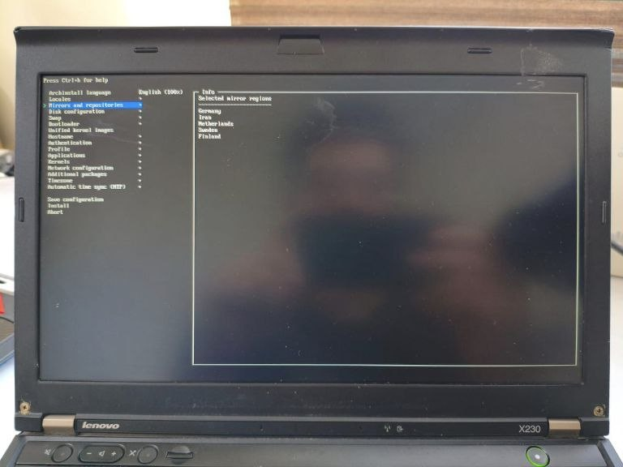

Setting Up Arch On An Old ThinkPad

Recently I bought a used ThinkPad X230 for ~$60. It had an i7 3rd-gen CPU, 8GB RAM, and 180GB SSD. The previous owner had a fresh install of Windows 10 on it and idle RAM usage was >2GB:

While on Arch + XFCE it got down to <1GB:
Hardware#
Bofore trying to install linux, I wanted to change the thermal paste on CPU and also change the coin battery so when booting without the main battery (which was the upgraded 9-cell version but dead and useless anyway), updating date and time wouldn’t need network connection or manual set-up.

Alright you got me I had no good reason to tear-up the whole device; I just wanted to =)Let the tear up begin!#

I took out the old coin battery and Replaced it with the new one:

Then I cleaned the old thermal paste,
 And replaced it with a new one (probably a little too much):
And replaced it with a new one (probably a little too much):

Software#
Installing Arch#
With the help of Arch Linux Wiki, I went to the official Arch Linux download page, picked a mirror close to my location and downloaded archlinux-2025.08.01-x86_64.iso (around 900MB). Then I plugged in my USB memory (only 8GB was needed) and opened Rufus with these settings:
- Device: my USB stick
- Boot selection:
archlinux-2025.08.01-x86_64.iso - Partition scheme:
GPT - Target system:
UEFI (non-CSM)
Then I hit START and selected Write in ISO Image Mode (Recommended)
Then I setted UEFI instead of Legacy in BIOS because it’s the less painful choice.
archinstall#
After booting up at archiso, I connected my device to a Wi-Fi using iwtcl network configuration tool.
Then I typed archinstall to fetch the Arch Linux database and go to guided installer. these were my settings:
- Language/keyboard: en, us (added Persian later in the settings)
- mirror regions
- (
Iranfailed at first attempt): - Germany
- Netherlands
- Sweden
- Finland

- (
- Disk: picked my 180 GB SSD
- Disk layout: “Erase all” for a clean install
- Bootloader:
systemd-boot - Filesystem:
ext4 - Hostname: e.g.,
jfryusef - Root password: really?
- User account: added one, ticked “superuser (wheel)”
- Network:
NetworkManager - Kernel:
linux(plain) - Microcode:
intel-ucode - Profile: “Desktop” → picked XFCE4 (light and stable)
- Audio:
pipewire - Optional packages: added
firefoxand a few more (optional) - Timezone: Asia/Tehran
Then I hit Install. When it finished, Reboot (removed USB).
I saw XFCE’s login screen and logged in!
Old ThinkPads + modern Linux kernels sometimes hard-freeze because of deep C-states. Mine was having it too.
Fix: added this kernel boot parameter in GRUB:
intel_idle.max_cstate=1
Installing Stuff#
I opened Terminal and installed these:
- sudo pacman -S
man-dbman-pages
(built-in documentation system for commands) - sudo pacman -S
fwupd
(firmware updater) - sudo pacman -S
bluezbluez-utils
(core Bluetooth protocol stack) - sudo pacman -S
gvfsgvfs-mtp
(virtual filesystem support and MTP support for Android devices) - sudo pacman -S
thunar-archive-pluginp7zipunzipunrar
(file manager integration tools and archive utilities) - sudo pacman -S
brightnessctl
(screen brightness control utility) - sudo pacman -S
pipewirepipewire-pulsewireplumber
(Linux audio stack) - sudo pacman -S
blueman
(GUI Bluetooth manager)
Then I typed these commands to enable the ones that needed enabling:
systemctl --user enable -- now pipewire pipewire-pulse wireplumber
sudo systemctl enable --now bluetooth
sudo timedatectl set-ntp true
I needed yay AUR to install some of my apps so I installed it:
sudo pacman -S --needed git base-devel
git clone https://aur.archlinux.org/yay.git
cd yay
makepkg -si
| pacman | yay |
|---|---|
sudo pacman -S firefox |
yay -S obsidian |
sudo pacman -S obs-studio |
yay -S anydesk-bin |
sudo pacman -S qbittorrent |
yay -S hiddify-app-bin |
| –snip– | –snip– |
Tweaking things#
I set some of these keyboard shortcuts:
Alt+T: Terminal (xfce4-terminal)
Windows button (Super L): Application Finder (xfce4-appfinder)
Super+E: ThunarFileManager (thunar)
ThinkVantage button (Launch1): Log out (xfce4-session-logout)
Alt+1: Workspace 1
Alt+2: Workspace 2
Alt+3: Workspace 3
Alt+4: Workspace 4
Alt+F: maximize window
Alt+Up: Tile window to the left
Alt+Down: Tile window to the right
Alt+Page Up: Tile window to the top-left
Alt+Page Down: Tile window to the top-right
Alt+Left: Tile window to the bottom-left (regret it because it interfears with going backwards for browsers)
Alt+Right: Tile window to the bottom-right
also I changed Volume steps to 10% in Volume Control (xfce4-pulseaudio-plugin)
Ricing?#
I tried to use Open Sans + JetBrains Mono as my main fonts and Gruvbox as my main color palatte using this theme throughout the whole UI.
I switched my diplay manager from LighDM,
sudo systemctl disable lightdm.service
to Ly (a lightweight login manager that runs in the terminal):
sudo pacman -S ly
sudo systemctl enable ly.service
These are the items on my panel (a 24px buttom row):

 I set
I set Smoothwall as my window decorations
I downloaded this Gruvbox Firefox theme and This VS Code theme and created this Obsidian theme:
{
"minimal-style@@ax1@@dark": "#83A598",
"minimal-style@@callouts-style": "callouts-default",
"minimal-style@@h1-l": false,
"minimal-style@@h1-size": "2em",
"minimal-style@@h1-weight": 900,
"minimal-style@@h2-weight": 800,
"minimal-style@@h2-size": "1.8em",
"minimal-style@@h2-l": false,
"minimal-style@@h3-l": false,
"minimal-style@@h3-size": "1.6em",
"minimal-style@@h6-weight": 400,
"minimal-style@@h5-weight": 500,
"minimal-style@@h1-variant": "small-caps",
"minimal-style@@h6-variant": "small-caps",
"minimal-style@@h5-variant": "small-caps",
"minimal-style@@h4-variant": "small-caps",
"minimal-style@@h2-variant": "small-caps",
"minimal-style@@h3-weight": 700,
"minimal-style@@h4-weight": 600,
"minimal-style@@h6-size": "1em",
"minimal-style@@h4-size": "1.4em",
"minimal-style@@h5-size": "1.2em",
"minimal-style@@icon-muted": 0.5,
"minimal-style@@active-line-on": false,
"minimal-style@@checkbox-shape": "checkbox-square",
"minimal-style@@metadata-heading-off": false,
"minimal-style@@metadata-add-property-off": true,
"minimal-style@@metadata-dividers": false,
"minimal-style@@metadata-icons-off": false,
"minimal-style@@sidebar-tabs-style": "sidebar-tabs-underline",
"minimal-style@@sidebar-tabs-names": "tab-names-off",
"minimal-style@@vault-profile-display": "vault-profile-default",
"minimal-style@@hide-help": true,
"minimal-style@@ribbon-style": "ribbon-hidden",
"minimal-style@@tabs-style": "tabs-underline",
"minimal-style@@tag-radius": "4px",
"minimal-style@@hl2@@dark": "#665C54",
"minimal-style@@window-title-off": false,
"minimal-style@@titlebar-text-weight": 100,
"minimal-advanced@@hide-settings-desc": false,
"minimal-advanced@@cursor": "default",
"minimal-style@@inline-title-size": "2em",
"minimal-style@@inline-title-weight": 900,
"minimal-style@@inline-title-color@@dark": "#689D6A",
"minimal-style@@color-red@@dark": "#CC241D",
"minimal-style@@color-orange@@dark": "#D65D0E",
"minimal-style@@color-yellow@@dark": "#D79921",
"minimal-style@@color-green@@dark": "#98971A",
"minimal-style@@color-blue@@dark": "#458588",
"minimal-style@@color-purple@@dark": "#B16286",
"minimal-style@@color-cyan@@dark": "#689D6A",
"minimal-style@@color-pink@@dark": "#D3869B",
"minimal-style@@ax2@@dark": "#458588",
"minimal-style@@blockquote-border-thickness": 3,
"minimal-style@@blockquote-border-color@@dark": "#D5C4A1",
"minimal-style@@blockquote-font-style": "normal",
"minimal-style@@blockquote-color@@dark": "#D5C4A1",
"minimal-style@@graph-node@@dark": "#D65D0E",
"minimal-style@@graph-line@@dark": "#D79921",
"minimal-style@@icon-color-hover@@dark": "#D5C4A1",
"minimal-style@@icon-color-active@@dark": "#EBDBB2",
"minimal-style@@icon-color-focused@@dark": "#FBF1C7",
"minimal-style@@indentation-guide-color-active@@dark": "#504945",
"minimal-style@@indentation-guide-color@@dark": "#32302F",
"minimal-style@@minimal-tab-text-color@@dark": "#BDAE93",
"minimal-style@@minimal-tab-text-color-active@@dark": "#FBF1C7",
"minimal-style@@tag-background-hover@@dark": "#282828",
"minimal-style@@tx1@@dark": "#EBDBB2",
"minimal-style@@text-formatting@@dark": "#D5C4A1",
"minimal-style@@tag-color@@dark": "#D5C4A1",
"minimal-style@@sp1@@dark": "#1D2021",
"minimal-style@@graph-node-attachment@@dark": "#B16286",
"minimal-style@@base@@dark": "#282828",
"minimal-style@@bg1@@dark": "#1D2021",
"minimal-style@@ui3@@dark": "#665C54",
"minimal-style@@ui1@@dark": "#3C3836",
"minimal-style@@ui2@@dark": "#504945",
"minimal-style@@ax3@@dark": "#689D6A",
"minimal-style@@canvas-dot-pattern@@dark": "#3C3836",
"minimal-style@@code-normal@@dark": "#EBDBB2",
"minimal-style@@code-background@@dark": "#282828",
"minimal-style@@code-comment@@dark": "#928374",
"minimal-style@@code-operator@@dark": "#D65D0E",
"minimal-style@@code-punctuation@@dark": "#458588",
"minimal-style@@graph-node-focused@@dark": "#8EC07C",
"minimal-style@@graph-node-tag@@dark": "#458588",
"minimal-style@@graph-node-unresolved@@dark": "#928374",
"minimal-style@@h3-variant": "small-caps",
"minimal-style@@icon-color@@dark": "#BDAE93",
"minimal-style@@image-muted": 0.7,
"minimal-style@@hl1@@dark": "#3C3836",
"minimal-style@@tx2@@dark": "#A89984",
"minimal-style@@tx3@@dark": "#665C54"
}
Here is the GitHub page for the Obsidian theme.
I used the default “elementary” theme for my cursor and icons.